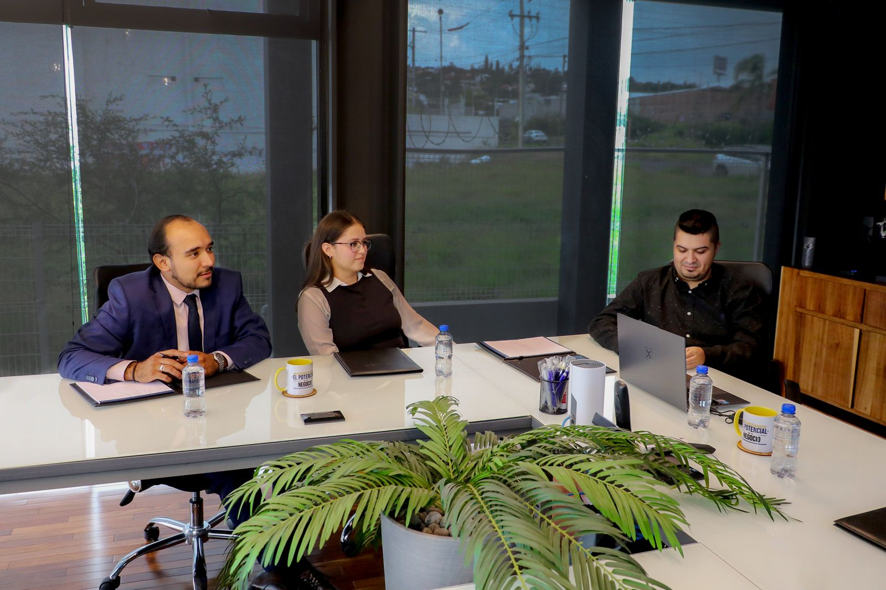

Observación continua
Seguimiento de cómo operan las áreas críticas, no solo de entregables puntuales.
Tu empresa puede tener áreas activas, proveedores contratados y procesos funcionando, pero si no existe una supervisión transversal, los errores pueden pasar desapercibidos hasta convertirse en problemas mayores.
MARU CORP no sustituye a la dirección: actúa como capa de control que conecta áreas críticas para que decidas con mayor claridad.
La supervisión empresarial permite observar cómo se conectan las áreas críticas de una empresa: administración, contabilidad, fiscal, nómina, legal, procesos y operación. Su objetivo no es sustituir a la dirección, sino darle mayor visibilidad para decidir mejor.
Es una capa de control transversal: observa, conecta y alerta. No es un servicio administrativo aislado ni un despacho que atiende tareas sueltas.
Seguimiento de cómo operan las áreas críticas, no solo de entregables puntuales.
Detecta cuándo fiscal, laboral, administración u operación dejan de alinearse.
Información consolidada para que la dirección actúe con anticipación, no en urgencia.

En muchas empresas, los riesgos no aparecen como un problema inmediato. Se acumulan en actividades diarias: archivos incompletos, pagos mal coordinados, contratos sin revisión, nóminas sin validación, obligaciones fiscales atendidas de forma reactiva o procesos que dependen de una sola persona.
MARU CORP ayuda a identificar esos puntos antes de que se conviertan en contingencias.
La prevención empresarial comienza cuando la dirección puede ver lo que antes estaba disperso.
La supervisión empresarial abarca las áreas donde más se pierde control cuando crecen las operaciones.
Fiscal, laboral y nómina deben supervisarse como un sistema, no como obligaciones aisladas.
Contabilidad y dirección deben compartir la misma lectura del estado operativo.
Cada responsable externo debe operar bajo una estructura de control visible para la dirección.
Si reconoces varios de estos puntos, tu empresa puede necesitar una capa de supervisión transversal.
No somos un proveedor administrativo más. Somos la estructura que supervisa cómo se conectan tus áreas críticas.
Evaluamos el estado de visibilidad entre áreas, proveedores y responsables internos.
Definimos puntos de control, responsables y flujos de información para la dirección.
Supervisamos fiscal, laboral, administrativo y operativo bajo una misma lógica de control.
Entregamos visibilidad consolidada para decidir con anticipación, no en contingencia.
Capa de control directivo, no sustituto de la dirección.
Coordinación de proveedores bajo supervisión central.
Alertas tempranas antes de que los errores escalen.
Enfoque preventivo con visión empresarial integrada.
Conoce el estado de supervisión de tu empresa y evalúa si necesitas una capa de control transversal. Sin compromiso.